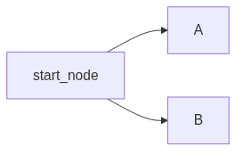
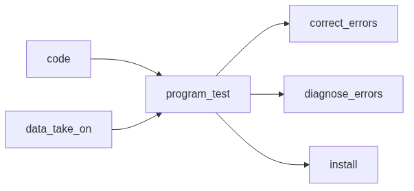
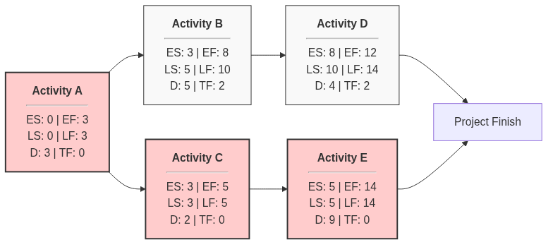
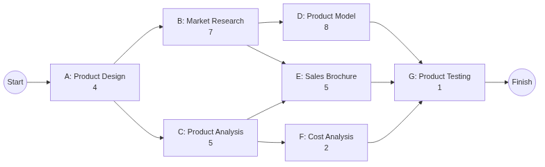

Software Engineering
Table of Contents
- 1. Software Engineering
- 2. Software Project Management
- 2.1. Software Project vs Job
- 2.2. Software Project Management
- 2.3. Defining Managment
- 2.4. Objectives
- 2.5. Cost-Benefit Evaluation Techniques
- 2.6. Example
- 2.7. What is Planning?
- 2.8. Objectives of Activity Planning
- 2.9. How to create a Project Schedule
- 2.10. 3 Approaches for Defining Activities
- 2.11. Network Planning Model
- 2.12. Risk Assessment
1. Software Engineering
1.1. Introduction
Software acts as both a product and a vehicle for delivering a product.
- As a Product: It manages, displays, and transmits information.
- As a Vehicle: It acts as a platform for other software (like an Operating System), controls other programs, or helps build new tools.
1.1.1. Fundamental Definition of Software
You can define a software as
- Instructions that provide desired features, functions and performance.
- Data Structures that enable programs to adequately manipulate information.
- Documentation that describes operation and use of programs.
1.1.2. Types of Software Applications
- System Software
- Application Software
- Engineering/Scientific Software (a specific type of application software)
- Embedded Software (a specific type of system software)
- Product line Software (a collection/bundle/suite of application software)
- WebApps (applications which run on a browser)
- AI Software (specific type of application software which use AI)
1.1.3. Failure Models of Hardware and Software
- Hardware
- Hardware is a physical system element, which starts with high failure rate (infant mortality), and then has a constantly low failure rate (steady state), and then later on again has a high failure rate due to wear-and-tear (wear out).
- The picture that depicts this is called the bathtub curve.

- When hardware components wear out, you can replace them with spare parts, but that doesn’t change the failure rate overall.
- Software
- Software can’t wear out because it’s a logical construct, not a physical entity.
- Software too, starts with high failure rate, but ideally should decrease and stay constant forever.
- What actually happens is that any side-effect caused by an implementation,
suddenly increases failure rate, and then as it’s fixed, it goes down again.
This keeps happening and is depicted by the below image.

- There is no concept of spare parts here. Every failure reflects an error in design or process.
- So software maintenance is harder than hardware maintenance.
1.1.4. Legacy Software
- What are they and why are they unchanged?
- These are software developed decades ago, but are still used because they’re indispensable to the business.
- They often have inextensible designs, convoluted code and poor change history/documentation.
- All in all, they are of poor quality.
- These are forgiven because they do the job. If it ain’t broken, don’t fix it.
- When will you need to change them?
- Software must be adapted to meet new computing needs.
- They must be enhanced to implement new business requirements.
- They must be extended to make it interoperable with modern systems.
1.1.5. Newer Categories of Software
- Ubiquitous Computing: The concept of wireless networks
- Netsourcing: Using the internet as a computing engine
- Open Source: Source Code open to the computing community.
1.1.6. IEEE’s Definition of Software Engineering
The application of a
- Systematic
- Disciplined
- Quantifiable
approach to the
- Development
- Operation and
- Maintenance
of software.
1.1.7. Layers of technology
| Tools: | What you use. Eg. Compilers, Database, programming languages, IDEs, etc |
| Methods: | These include the things which make up a workflow. Eg. Communication, Design Modeling, Testing |
| Process: | This is a way of managing objectives and outcomes |
| Quality Focus: | What matters the most in your app. Eg. Banks need correctness. |
The last layer is what matters the most in engineering.
- A process is a collection of:
- Activity: what you do to achieve a broad objective. (a phase)
- Action: set of tasks
- Task: Focuses on a small and well-defined objective that produces a tangible outcome.
- Processes hold everything together in any model.
1.2. Process Models
1.2.1. Prescriptive/ Traditional
- These are for large-scale projects.
- You prescribe a set of processes and workflows for projects. You focus on the process over the product.
- All requirements are clearly defined before implementation. This model favours anticipation, not adaptation.
- The organizational structure is linear.
- Clients and customers are involved all the time.
- Issues escalate to managers, and they are also the people who provides estimates.
- Waterfall
- What it is
\[ \text{Communication} \rightarrow \text{Planning} \rightarrow \text{Modelling} \rightarrow \text{Construction} \rightarrow \text{Deployment} \]
- Communication is talking with the client (project initiation and requirements gathering).
- Planning is about organizational structure (estimating, scheduling and tracking)
- Modelling is about planning the technical implementation (analysis and design)
- Construction is the actual implementation (code and test)
- Deployment is giving the final product (delivery, support and feedback)
- When to use
- When requirements are stable and unlikely to change
- When resources are available throughout.
- Disadvantages
- You have to finish a phase to move to the next one.
- You can’t go back a phase.
- You get an actual product only at the end of everything.
- What it is
- V-Process
- What it is

- Extends waterfall model by adding a testing phase.
- It emphasizes verification and validation.
- Testing is done in parallel to development.
- This ensures that the product meets the specifications.
- Each phase has specific deliverables, and the resources are well utilized.
- When to use
- Requirements are clear and fixed.
- Scale is small
- But you also need early defect detection.
- What it is
- Incremental
- What it is

- Applies linear sequences in a staggered fashion
- Advantages
- Users get working functionality early, even if the complete system isn’t ready. This provides value sooner and allows for feedback.
- When to use
- You have a large project that can be broken into modules
- Resources can be added gradually.
- Complexity is high but no uncertainty.
- What it is
- Rapid Application Development
- Prototypic / Evolutionary Process Models
- Spiral Model
- It’s evolutionary model, but risk analysis is introduced.
- Instead of being a loop, you move that line in a spiral shape.
- This is better for large scale projects.
- Each iteration includes
- Planning
- Risk analysis
- Engineering
- Evaluation

1.2.2. Agile Method
- These are for small-scale process.
- The whole premise is that you prioritize human outcomes over rigid system.
- The organizational structure is iterative, not linear.
- This model favors adaptation.
- Clients don’t get involved that much, and customers don’t get involved at all after the execution starts.
- Issues are handled by the entire team, and the scrum master facilitates all effort estimations.
- Refer to traditional approach to compare.
- 4 values of Agile
These are 4 values to focus on quality.
- \(\text{People and Interactions} > \text{rigid processes and tools}\)
- \(\text{Working software} > \text{Documentation}\)
- \(\text{Customer collaboration} > \text{contract negotiation}\)
- \(\text{Responding to change} > \text{sticking to a plan}\)
- 12 Principles
The 12 principles articulated in the Agile Manifesto emphasize creating a work environment that focuses on the customer:
- Satisfying customers through early and continuous delivery of valuable work.
- Breaking big work down into smaller tasks that can be completed quickly.
- Recognizing that the best work emerges from self-organized teams.
- Providing motivated individuals with the environment and support they need and trusting them to get the job done.
- Creating processes that promote sustainable efforts.
- Maintaining a constant pace for completed work.
- Welcoming changing requirements, even late in a project.
- Assembling the project team and business owners on a daily basis throughout the project.
- Having the team reflect at regular intervals on how to become more effective, then tuning and adjusting behavior accordingly.
- Measuring progress by the amount of completed work.
- Continually seeking excellence.
- Harnessing change for a competitive advantage
Here are those pictorially:

- Agile Scrum Methodology
- Scrum is a lightweight framework of Agile Project Management
- A sprint in Agile is the time-boxed period to complete an increment.
- Three Pillars
- Transparency
- Inspection
- Adaptation
- Scrum Artifacts
Scrum artifacts are information the team and stakeholders use to detail
- the product being developed
- the actions to produce it, and
- the actions performed during the project
Product Backlog Sprint Backlog Increment List of requirements of build in product aka. list of user stories Set of product backlog items to be implemented in current sprint Customer deliverables which were actually delivered during a sprint - Epics
- They represent a big-picture vision
- User Stories
- It’s a requirement expressed in end-user POV
- These break epics down into actionable tasks.
- These include functional user stories (eg. can I save my order and come back to it?) and non-functional user stories (these are technical implementations of the functions like “can I place an order at ANY time?”)
- They comprise of 3 elements: card, conversation and confirmation
- Card
- User stories are printed on physical cards.
- The front tells us:
- Who the primary stakeholder is (As a some role)
- What effect does the story have (I want to do something)
- What business value does this effect give the stakeholder (so that I can get some benefit)
- The back gives us acceptance criteria (the test cases which prove that the feature works as intended).
- Conversation
Discuss details among stakeholders
- Confirmation
Define acceptance criteria
- Story Points
- They help quantify the complexity of a user story
- The numbers used are often part of the fibonacci sequence
- Larger the number, higher the complexity and the need to be broken down into smaller user stories.
- Events
- Backlog Grooming/Optimization
- The product owner optimizes the product backlog using feedback they get from users and development team.
- A good backlog should be DEEP:
- Detailed Appropriately (amount of detail used to describe them ∝ how soon they’re going to be delivered)
- Estimated (estimation of work needed to deliver ∝ how soon they’re going to be delivered)
- Emergent (backlog adapts to customer needs)
- Prioritized (backlog items are ranked according to business value)
- Sprint Planning
- To make the sprint backlog, the development team conducts this meeting.
- Specific user stores are added to the sprint backlog, from the product backlog.
- Daily Scrum/ Standup
- It’s a meeting of about 15 minutes every day to make sure everyone is on the same page.
- The common questions are:
- What did I do yesterday?
- What do I plan to do today?
- Are there any obstacles?
- Sprint
- The time taken to finish an increment
- It’s typically two weeks long
- The more complex the work is, the more shorter the sprint should be.
- Sprint Review
- At the end of a sprint, the team showcases the increment to the stakeholders and teammates.
- The product owner can chose if they want to release the increment or not.
- For a 1 month long sprint, a sprint review should take not more than 4 hours.
- Sprint Retrospective
- The team comes together to discuss what went well, what didn’t, and how things can be improved.
- Backlog Grooming/Optimization
- Roles
Product Owner Scrum Master Development Team Client. They build the product backlog, perform backlog grooming and can also choose to release sprint increment or not Coaches the team on scrum principles Delivers a shippable increment during every sprint They are an individual not a group. Else the development team would be getting mixed guidance They understand the work and help in improving efficiency. They train each other and are self-organizing. They work with stakeholders and customers to make epics, then they work with the development team to break them down into user stories.
1.3. Requirements Engineering
1.3.1. 7 Tasks of a Requirement Engineer
- Inception
- Understand the problem
- Identify stakeholders
- Elicitation
Gather details
- Collaborative Requirements Gathering
- A facilitator (customer/developer) conducts a meeting to negotiate different approaches.
- Quality Function Deployment
- Translate needs of customer → technical requirements for software
Three types of requirements:
Normal Expected Exciting Goals stated for product by customer Implicit requirements that might be fundamental enough for the customer to not tell them explicitly Requirements for features customer didn’t expect
- Collaborative Requirements Gathering
- Elaboration
- Build a analysis/technical model and develop use cases.
- An analysis model is a snapshot of requirements at a specific point of time.
- There are majorly 4 categorizations of models:
- Scenario based models (use case and user stories)
- Class based models (class diagrams from OOPS)
- Behavioural Models (state diagrams)
- Flow Models (eg. DFDs, data models)
- Use Case Diagram
Here’s an example of a use case diagram:

- There are 4 symbols in a use case diagram:
- Actor (Outside the box)
- Use Cases (Ellipses)
- Associations (lines/arrows connecting actors and use cases)
- System Boundary (rectangle, which indicates scope)
- In UML, if we include a label
<< include >>on an association/relationship, it means the use case is mandatory. If we use this label, the arrow becomes dotted. - Similarly if we include a label
<< extend >>on an association/relationship, it means the use case is optional. Here too, the arrow is dotted.
- There are 4 symbols in a use case diagram:
- State Diagram
- A state diagram looks like this:

- Data Flow Diagram
- Rectangle: Producer of Data
- Circle: This is a function that takes data as input, processes it and gives output.
- Arrows: For data flow
- Parallel Lines: Text written inside parallel lines means it’s data stored for later use.
- Negotiation
- Using the technical model we’ve built, we evaluate the feasibility of what the customer wants, rank the requirements, and evaluate the risks, iteratively.
- Specification
- Make the Software Requirement Specification (SRS) document.
- This contains all functional and non-functional requirements.
- Functional Requirements
- Functional requirements list all the functions of the website, and tells us how it works in general.
- These are things the end-user specifically demands.
- Non-Functional Requirements
- Non-functional requirements list technical implementations of functional requirements. They could be related to performance, scalability, security, usability, etc.
- Any performance criteria (eg. 99.9% uptime), constraints (eg. 1000 transactions per seconds) are included here.
- Validation
- Validate the requirements presented in SRS.
- Decision Tables
Condition Stubs Condition Entries Action Stubs Action Entries Variables that affect the system Values of condition stubs Outcomes of system Indicators of whether an action was executed or not Eg. Input, User Roles, System states Eg. yes/no, numeric, text Eg. Updating db entry, printing a message Eg. X, O, Blank Eg.

- Decision Tree
- The leaf nodes represent actions to be performed.
- Requirements Management Task
Make a requirement traceability matrix (RTM)
1.4. Design Engineering
1.4.1. McGlaughin’s Characteristics
- Implement all implicit/explicit requirements by stakeholders.
- Design should be a readable, understandable guide.
- Design should give a complete picture of the software.
1.4.2. Functional Independence
- Cohesion
- Degree to which elements inside a module work together.
- functional strength of a module
- More cohesion means elements are more closely related and they all work towards the same goal.
- Higher the cohesion, the easier the system is to maintain.
- Functional Cohesion
- Everything needed is readily available in the module.
- This is the ideal case.
- Sequential Cohesion
- The output of an element is the input of another.
- Data flows between the parts.
- Communicational Cohesion
- Two elements operate on the same input data or contribute towards the same output data.
- Procedural Cohesion
- It’s not data flow, but it’s still in order.
- Coupling
- Degree of Interdependence among modules
- More the coupling means more interconnectivity and this means it’s harder to maintain.
- Data Coupling
- Only data moves around
- The components are independent of each other
- There is no tramp data. Tramp data is where data moves from one function to another through intermediary functions, and those functions don’t use this data.
- Stamp Coupling
- Data structures move around.
- This contains tramp data, but it could have been for efficiency sake too.
- Control Coupling
- Modules communicate via control information/parameters.
- External Coupling
- Depends on external modules, not part of the system.
- Common Coupling
- Modules have shared data like global data structures.
- Reusing modules or controlling data access is an issue.
- Content Coupling
- One module can modify the data of another module.
- This is the worst form of coupling.
2. Software Project Management
2.1. Software Project vs Job
- A software project is a planned development of a software product. It includes \[Designing \rightarrow Coding \rightarrow testing \rightarrow Deployment\]
- A job is a repetition of a very well-defined and well understood tasks with very little uncertainty. A project, however, is a little more uncertain and is a little more exploratory.
- A task is more project-like, it’s:
- non-routine
- planned
- aimed at a specific gtarget
- work carried out for a customer other than yourself
- involving several specialisms
- made up of several different phases
2.2. Software Project Management
Software project management is the process of planning, organizing and controlling software projects. It includes:
(1) Feasibility Study → (2) Planning → (3) Execution Check if it’s technically and financially feasible. Make a plan only if it’s feasible. Implement the plan. - It ensures that the software:
- is delivered on time
- is within budget
- meets user requirements
- Project Management is managing:
- People
- Time
- Cost
- Resources
- Software projects are different from other projects through:
- Invisibility: Software can’t be physically seen or touched like a building or a car.
- Complexity:
- Conformity: Must conform to some rules. For example, a banking application must conform to rules set by RBI.
- Flexibility:
2.3. Defining Managment
| Planning | Decide what’s to be done |
| Organizing | Make Arrangements |
| Staffing | Selecting the right people |
| Directing | Giving instructions to them |
| Monitoring | Check progress |
| Controlling | Taking action to remedy hold-ups (clear blockages) |
| Innovating | Coming up with solutions when problems arise |
| Representing | Talking to clients, users, developers and other stakeholders |
2.4. Objectives
They should be SMART:
| S | Specific |
| M | Measureable |
| A | Achievable |
| R | Relevant |
| T | Time Constrained |
2.5. Cost-Benefit Evaluation Techniques
- \(\text{Payback Period} = \text{total number of years} + \frac{\text{amount remaining}}{\text{cashflow for next year}}\)
- \(\text{Return of Interest} = \frac{\text{Average Annual profit}}{\text{Total Investment}} \times 100\)
- \(\text{Discount Factor} = \frac{1}{(1+r)^{t}}\)
- \(\text{Discounted Cashflow} = \text{Cashflow} \times \text{Discount Factor}\)
- \(\text{Net Profit} = \text{The difference bteween the total costs and the total income over the life of the project} = \Sigma \text{(Discounted Cashflow)}\)
2.6. Example
XYZ Software solutions has recieved funding to develop only one software project this year. The management is evaluating two projects:
- Project A: Hosptital Management System
- Project B: Online Learning Management System
| Year | Project A | Project B |
|---|---|---|
| 0 | -10,00,000 | -8,00,000 |
| 1 | 2,00,000 | 1,50,000 |
| 2 | 2,50,000 | 2,00,000 |
| 3 | 3,00,000 | 2,50,000 |
| 4 | 3,50,500 | 2,50,000 |
| 5 | 5,00,000 | 3,50,000 |
2.6.1. Calculate Cash Inflow
2.6.2. Calculate Net Profit
- \(\text{Net Profit} = \Sigma(Profit per year) - (Initial amount invested)\)
- \(\text{Net Profit}_{A} = 16,00,000 - 10,00,000\)
- \(\text{Net Profit}_{A} = 6,00,000\)
- \(\text{Net Profit}_{B} = 16,00,000 - 8,00,000\)
- \(\text{Net Profit}_{B} = 8,00,000\)
2.7. What is Planning?
Planning is an ongoing process of refinement
2.8. Objectives of Activity Planning
- Feasibility Assessment
- Resource Allocation
- Detailed Costing
- Motivation
- Co-ordination
2.9. How to create a Project Schedule
- Find the right activity plan
- Risk analysis (find what could go wrong)
- Resource allocation
- Schedule Production
2.10. 3 Approaches for Defining Activities
2.10.1. Activity Based
- You build a work breakdown structure where:
- Project → Analyze, Design, Build
- Design → Data, Process, Physical Design
- A child is added only if it directly contributes to its parent.
- You keep breaking down these nodes into tasks that can be assigned to one person or section.
- The leaf nodes are the actual activities.
2.10.2. Product Based
- You build a product breakdown structure, where each node is a product and each arrow is a transformation activity.
2.10.3. Hybrid
- The work breakdown structure is organized into deliverables.
- IBM in their MITP methodology recommends the levels as:
- Project
- Deliverables
- Components
- Work-Packages
- Tasks
2.11. Network Planning Model
- It is used to plan and schedule project activities and their relationship as a network.
- The flow is from left to right.
- Identify which activity to complete first. There are many techniques for this.
2.11.1. Types
2.11.2. Hammock Activities
These are activities with zero duration themselves, and are assumed to start at the same time as the last hammocked activity and end as the same time as the last one too.
2.11.3. Formulating a Network Model
A project network should have only one start node.

- A node has a duration. Links don’t.
- Numbers on the link tells you the logical order.
- Time moves from left to right and the flow represented as flow.
Immediately preceding activities are called precedents.

- A loop is an error that represents a situation that cannot happen in practise. (there can’t be loops coz time only move forward).
Here’s what a typical precedence graph looks like:

2.11.4. Information within a Block
- In general, what you need to know is: \[\text{Finish Time} = \text{Start Time} + \text{Duration}\]
- Early Start: \(ES\)
- The earliest possible time a task can begin, assuming all previous tasks are finished.
- Earliest start time for the current activity is basically the earliest start time of the precendent activity.
- The earliest start time for activities with no precedents is 0.
- Early Finish: \(EF = ES + \text{Duration}\)
- Late Start:
- Late Finish:
2.11.5. Forward Pass
- The forward pass is carried out to calculate the earliest dates on which each activity may be started and completed.
- It’s a technique used in project scheduling/ critical path method (cpm) to determine the earliest time at which any activity is started.
- Calculating
ES EFis one forward pass.
2.11.6. Backward Pass
- The backward pass is performed from Finish back toward the start.
- Its purpose is to calcualte the lates dates on which each activity can start and finish without delaying the project.
2.11.7. Example: A project comprises of the following activities given in the table
| Activity ID | Description | Duration | Intermediate Predecessor |
|---|---|---|---|
| A | Product Design | 4 | None |
| B | Market Research | 7 | A |
| C | Product Analysis | 5 | A |
| D | Product Model | 8 | B |
| E | Sales Brochure | 5 | B, C |
| F | Cost Analysis | 2 | C |
| G | Product Testing | 1 | D, E, F |
- Construct an Activity on Node Network which will provide an overview of the planned project?

- How soon could the project be completed?
Activity Duration ES EF A 4 0 4 B 7 4 11 C 5 4 9 D 8 11 19 E 5 11 16 F 2 9 11 G 1 19 20 - Which activities need to be completed on time in order to ensure that the projectis completed without delay any overdue on time?
2.11.8. Float
- It tells you how long the project can be delayed without delaying the finishing time. \[\text{Total Float} = \text{LS} - \text{ES} = \text{LF} - \text{EF}\]
- Critial Path is the longest path where every activity has 0 float.
2.11.9. Activity Span
\[\text{Activity Span} = \text{LF} - \text{ES}\] Both float and span belongs to one activity.
2.12. Risk Assessment
- It’s the process of identifying potential risks in a software project.
2.12.1. Risk Projection or Estimation
- Risk projection evaluates each identified risk in two ways.
2.12.2. Who performs Risk Assessment
- Project Planner
- Project Manager
- Technical Staff
2.12.3. Risk Prioritization
- It’s done using a table where rows are the events, and the columns are the probability, impact, and priority:
For eg.
Risk Probability Impact Priority Key Programmer leaves UI Glitch
2.12.4. Impact of a risk
- There are three factors that affect risk impact.
2.12.5. Risk Exposure
\[\text{Risk Exposure} = \text{Cost / Potential Damage} \times \text{Probability of Occurance}\]
2.12.6. Probability Impact Matrix
- A probability-impact-matrix is a risk asssessment tool used in software
project management to classify and prioritze risks based on two factors:
- probability of occurance (x-axis)
- impact (y-axis)
- Shaded region represents risks that require greater attention because t